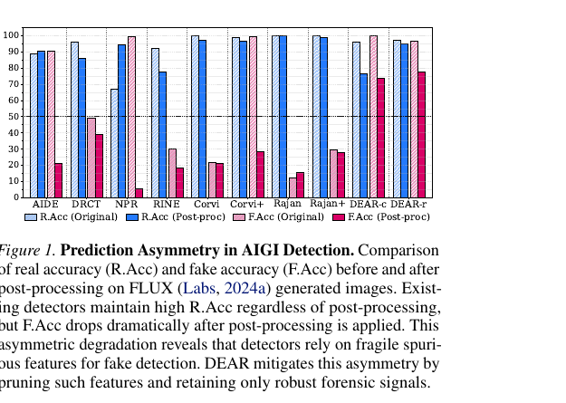
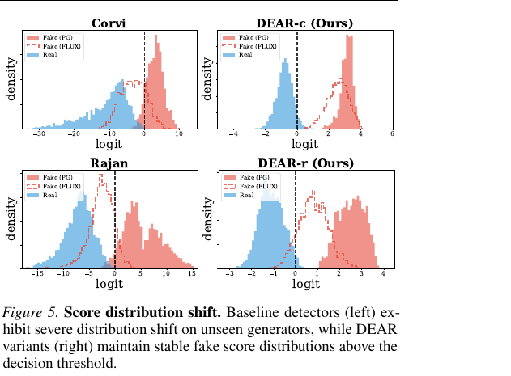
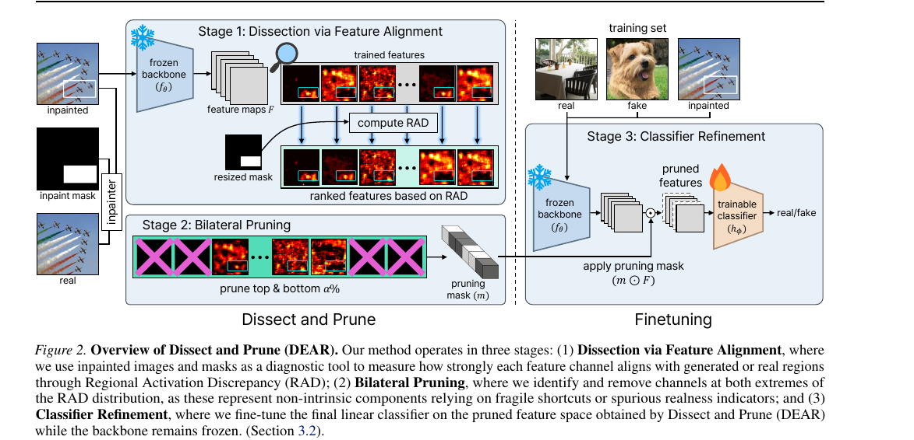
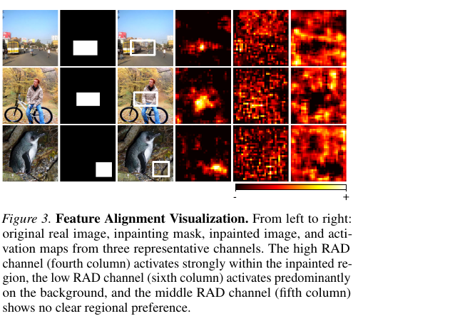
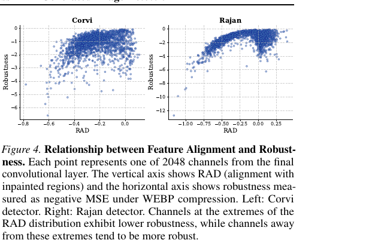

[논문 리뷰] Dissect and Prune: Enhancing Robustness in AI-Generated Image Detection (ICML 2026)
Kim et al., ICML 2026, 한국 AI안전연구소(AISI)/ETRI arXiv: 2606.10309 · 코드: github.com/dahyedahye/dear
AI 생성 이미지(AIGI) detector들은 벤치마크에서 높은 성능을 보고해왔다. 이 논문은 그 높은 숫자가 사실은 real 클래스로 치우친 편향의 착시임을 보이고, 그 원인이 되는 feature를 detector 내부에서 찾아 물리적으로 제거하는 방법(DEAR)을 제안한다.
1. 문제 제기: Prediction Asymmetry
기존 detector들의 실제 신뢰도를 뜯어보면, 저자들이 prediction asymmetry라고 이름 붙인 현상이 나타난다. 학습 분포 안에서는 잘 작동하지만, 분포 밖으로 나가면 오류가 무작위로 늘어나는 게 아니라 “전부 real”이라는 한 방향으로 쏠리며 fake accuracy만 선택적으로 붕괴하는 것이다.

실패가 발생하는 조건은 두 가지다.
① Unseen generator shift. 학습 때 보지 못한 generator의 이미지가 들어오면 real로 기본 판정한다. 예컨대 Corvi detector는 FLUX 원본 이미지에서 R.Acc 99.9%를 유지하면서 F.Acc는 21.5%에 그친다.
② Post-processing. JPEG/WEBP 압축이나 리사이즈가 가해지면 편향이 극단화된다. NPR의 경우 평균 F.Acc가 95.9% → 12.2%로 폭락하는데, R.Acc는 오히려 67.2% → 94.2%로 올라간다. 사실상 “모든 입력을 real이라 답하는” trivial classifier로 퇴화하는 것이다.
기존 지표가 이 문제를 가리는 방식
그렇다면 왜 이 문제가 지금까지 잘 드러나지 않았을까. 평가 관행의 세 가지 요소가 착시를 만든다.
첫째, 평가 세팅이 관대하다. 테스트 이미지가 후처리 없는 원본 위주라, 배포 환경(SNS 업로드, 재압축)에서의 붕괴가 측정되지 않는다.
둘째, AUC는 threshold-free 지표다. AUC는 score의 상대적 순위만 보기 때문에, fake score 분포가 통째로 decision threshold 아래(real 방향)로 밀려도 real보다 상대적으로 높기만 하면 점수가 유지된다. Corvi/FLUX의 경우 AUC 87.8과 F.Acc 21.5%가 공존한다 — “구분은 하는데 결정을 못 하는” 상태를 AUC는 숨긴다.

셋째, 집계가 분해를 가린다. Overall accuracy는 R.Acc/F.Acc의 비대칭을 하나의 숫자로 뭉개고, 여러 generator의 평균은 FLUX 같은 개별 구멍을 가려준다.
그래서 이 논문의 평가는 원본/후처리 이중 표 + R.Acc/F.Acc 분리 보고 + 고정 threshold를 기본으로 한다.
2. 문제의 원인: 두 방향의 Spurious Feature
저자들은 이 비대칭이 detector의 spurious feature 의존에서 온다고 진단한다. Real/fake를 가르는 본질적 신호가 아닌데 학습 데이터에서 우연히 라벨과 상관관계가 생긴 특징들이며, 방향이 둘이다.
원인 1 — Fake 쪽: generator-specific fingerprint. 특정 generator에만 존재하는 노이즈 패턴, low-rank trace, spectral bias 같은 고유 지문에 과적합한다. 이 지문은 다른 generator에는 없어서 일반화가 안 되고(→ 실패 조건 ①), 후처리 한 번에 쉽게 지워지는 fragile한 신호다(→ 실패 조건 ②).
원인 2 — Real 쪽: 학습 real 이미지에 섞여 있던 후처리 흔적. 학습용 real 이미지는 웹에서 수집되어 이미 압축을 거친 상태인 반면, fake는 generator에서 갓 나와 압축 흔적이 없다. 이 불균형 때문에 detector가 압축 아티팩트 자체를 “real의 증거”로 오학습한다. 실제로 Corvi/Rajan의 학습 데이터(LSUN)는 WEBP 압축을 거친 이미지들이었고, 배포 시 fake 이미지가 압축되면 detector는 그 흔적을 보고 real로 판정해버린다.
두 원인 모두에서 판정 논리는 “아는 fake 단서가 보이면 fake, 안 보이면 real”이 되므로, 실패는 항상 real 방향으로 쏠린다. Appendix C의 실험이 이 진단을 뒷받침한다 — 단순한 일반화 실패라면 양쪽 정확도가 함께 떨어져야 하는데, WEBP 압축 강도를 올려도 R.Acc는 100%로 유지되고 F.Acc만 0.03%까지 무너진다. 이 비대칭 자체가 spurious 의존의 signature라는 것이다.
3. 대상: CNN 계열 (ResNet-50) Detector
DEAR는 새 detector를 학습하는 방법이 아니라 이미 학습된 detector를 사후에 수술하는(post-hoc) 방법이다. 수술 대상은 ResNet-50 기반의 두 대표 detector다.
Corvi(2023)는 LSUN/COCO real + LDM 생성 fake로 학습했고, Rajan(2025)은 같은 구조에서 fake를 real 이미지의 VAE 재구성본으로 만들어 real/fake 쌍을 픽셀 단위로 정렬시킨 변형이다. 두 모델 모두 마지막 conv layer가 2048개 채널의 feature map(2048×h×w)을 내고, 이를 global average pooling한 2048차원 벡터 위에서 linear classifier가 real/fake를 판정한다. DEAR의 분석과 개입은 전부 이 2048개 채널 단위에서 이뤄진다.
(한계로 명시해둘 것: 채널 단위 분석은 CNN feature map의 구조에 기댄 것이라, CLIP/DINOv2 같은 ViT 계열 표현 공간에서도 같은 결론이 성립하는지는 이 논문에서 검증되지 않았다.)
4. 해결 방법: DEAR (Dissect and Prune)
핵심 아이디어는 두 단어에 담겨 있다. 2048개 채널을 **해부(dissect)**해서 어떤 채널이 spurious feature를 쫓는지 진단하고, 그 채널들을 **절제(prune)**한다. 그리고 진단 도구로 inpainted image를 쓴다.

Stage 1 — Dissection: Inpainted Image로 진단하고 RAD로 측정
왜 inpainted image인가. 어떤 채널이 spurious인지 알려면 “이 채널이 생성 아티팩트에 반응하는가, real 신호에 반응하는가”를 측정할 기준이 필요하다. 그런데 전체가 real이거나 전체가 fake인 보통 이미지로는 채널 활성이 픽셀의 출처 때문인지 이미지의 내용(semantic) 때문인지 분리할 수 없다.
Inpainted image가 이 문제를 해결한다. Real 이미지에 무작위 직사각형 마스크를 씌우고 그 영역만 SD1.5 inpainting으로 채우면, 한 장 안에 real 픽셀과 생성 픽셀이 공존하고, 어느 쪽이 어느 쪽인지 마스크로 정확히 아는 진단 이미지가 만들어진다. 마스크 안팎이 같은 장면을 공유하므로, 채널이 마스크 경계를 따라 켜진다면 그 반응은 내용이 아니라 픽셀 출처에 귀속시킬 수 있다. (마스크 경계에는 Gaussian blur를 적용해, 경계 불연속성이라는 또 다른 가짜 단서를 차단한다.)
측정 지표 — RAD (Regional Activation Discrepancy). 채널 k의 activation map에 대해:
즉 inpaint 영역 평균 활성 − real 배경 평균 활성이다. 약 6,400장의 inpainted 이미지에 대해 평균하여 채널당 점수 하나를 얻는다.

RAD가 큰 양수면 생성 영역만 쫓는 채널(generator 지문 의심 — 원인 1), 큰 음수면 real 배경만 쫓는 채널(압축 흔적 등 realness 지표 의심 — 원인 2)이다.
핵심 발견 — 정렬 극단이 곧 취약성. 그런데 극단 정렬 채널이 정말 나쁜 채널일까? 저자들은 각 채널의 WEBP 압축 전후 activation 변화(MSE)를 별도로 측정해 RAD와 대조했다. 결과는 뚜렷한 U자 관계: RAD 양 극단의 채널일수록 후처리에 활성이 크게 흔들리고, 중간 대역 채널이 안정적이다. 극단 채널이 잡고 있는 신호가 fragile한 spurious feature라는 진단이 경험적으로 확인되는 지점이고, 다음 단계의 정당화가 된다.

Stage 2 — Bilateral Pruning: 양 극단 절제
RAD 분포의 상위 α%와 하위 α%(α는 10~30%에서 튜닝)에 해당하는 채널을 binary mask로 제거한다. Feature tensor에 element-wise 곱(m ⊙ F)을 적용해 해당 채널의 출력을 0으로 만드는 hard gating이다 — backbone 가중치는 건드리지 않고 출력만 차단한다.
양쪽(bilateral)을 자르는 이유가 원인의 양방향성과 정확히 대응한다. 음수 극단 = real 쪽 spurious(압축 흔적), 양수 극단 = fake 쪽 spurious(generator 지문). 선행 연구인 Stay-Positive(Rajan & Lee, 2025)가 가중치 비음수 제약으로 real 쪽만 blind하게 억제한 것과 달리, DEAR는 명시적 진단으로 문제 채널을 지목하고 양방향을 모두 제거한다.
한 번 결정된 mask는 detector에 영구 장착된다 — test-time에 이미지별로 바뀌는 것이 아니라, 어떤 입력이 오든 항상 같은 채널이 죽어 있는 정적(static) 방법이다.
Stage 3 — Classifier Refinement: 마지막 층만 재학습
채널의 20~60%가 0이 되면 기존 linear classifier의 가중치는 “존재하지 않는 증거를 참조하는 판단 규칙”이 되므로 그대로 쓸 수 없다. 그래서 backbone은 frozen 유지, 최종 linear classifier만 가중치를 재초기화하고 재학습한다.
학습 데이터는 원래 학습 데이터에 진단용 inpaint 데이터를 fake 라벨로 추가한 병합 데이터셋이다. Inpaint 데이터를 학습에도 재활용함으로써, classifier가 이미지 전체가 fake인 경우뿐 아니라 국소 영역만 생성된 경우도 잡도록 가르친다. 학습되는 파라미터가 2048+1개뿐이라 비용은 가볍다(H200 1장 기준 약 3시간).
5. 결과 요약
후처리된 테스트셋에서 DEAR-c는 base인 Corvi 대비 평균 F.Acc 47.7% → 90.2%, DEAR-r은 Rajan 대비 58.2% → 89.5%로, R.Acc를 크게 희생하지 않으면서 비대칭을 해소한다. 특히 인상적인 것은 Appendix C.2의 unseen generator family 결과다 — 극단 채널을 제거했더니 GAN(+47.3%p), FLUX(21.5→100%), Deepfake에서 F.Acc가 오히려 대폭 회복됐다. 잘린 채널이 보편적 forensic 신호였다면 불가능한 패턴이므로, 그 채널들이 학습 generator의 지문이라는 spurious 쪽 해석을 강하게 뒷받침한다.
Score 분포 관점에서도(위 Figure 5), baseline은 unseen generator에서 fake score 분포가 threshold 아래로 밀리는 반면 DEAR는 generator가 바뀌어도 분포가 threshold 위에 안정적으로 머문다. Generator별 재보정 없이 단일 threshold로 운영 가능하다는 실용적 의미가 있다.
또 하나 흥미로운 통제 실험(Appendix H): inpainted 이미지를 처음부터 학습 데이터에 넣고 detector를 새로 학습한 변형(Corvi-inpaint 등)은 개선이 거의 없거나 오히려 악화된다. 즉 효과의 원천은 inpaint 데이터 노출이 아니라 진단-절제 메커니즘 자체라는 것이 분리되어 확인된다.
6. 생각해볼 지점들
“진짜 신호도 같이 잘리는 것 아닌가?” 보편적인 생성 흔적 역시 생성 영역에 정렬될 테니 RAD 양수 극단에 있을 수 있다는 우려는 자연스럽다. 논문의 방어(Appendix C.2)는 “잘랐더니 unseen generator에서 오히려 좋아졌다”는 사후적 논증인데, 설득력은 있지만 이 두 detector와 이 데이터 조합 안에서의 경험적 결과이지 이론적 보장은 아니다. 실제로 DEAR의 R.Acc는 base 대비 소폭 하락하는 트레이드가 존재한다.
해석의 위상. “극단 양수 = generator 지문, 극단 음수 = 압축 흔적”이라는 대응은 논문 스스로 “attribute”라는 동사로 표시하듯 해석이며, 근거는 선행 연구 인용과 결과 정합성이다. 극단 채널이 실제로 해당 아티팩트에 선택적으로 반응하는지의 기전 수준 검증은 없다.
진단의 일반성. 진단이 SD1.5 inpainting에 묶여 있는 것 아니냐는 우려에는 Appendix D가 답한다 — inpainter를 FLUX Fill, SDXL로 교체해도 채널 랭킹(Spearman 0.790.97)과 pruning 결정(Jaccard 0.830.92)이 잘 보존된다. 다만 분석이 ResNet-50에 한정되어 있어, ViT 계열(CLIP/DINOv2) 표현 공간에서 같은 U자 관계가 성립하는지는 열린 문제로 남아 있다.
Global 판정이라는 설계. RAD는 데이터셋 전체 평균으로 채널의 spurious 여부를 일괄 판정한다. 어떤 채널의 유효성이 이미지의 semantic 영역에 따라 달라질 가능성 — 예컨대 특정 도메인에서는 유효한 신호가 다른 도메인에서는 spurious일 가능성 — 은 평균에 가려진 채 남아 있다.
참고: 본문 그림은 원 논문(arXiv:2606.10309)에서 발췌한 것으로, 저작권은 원저자에게 있습니다.